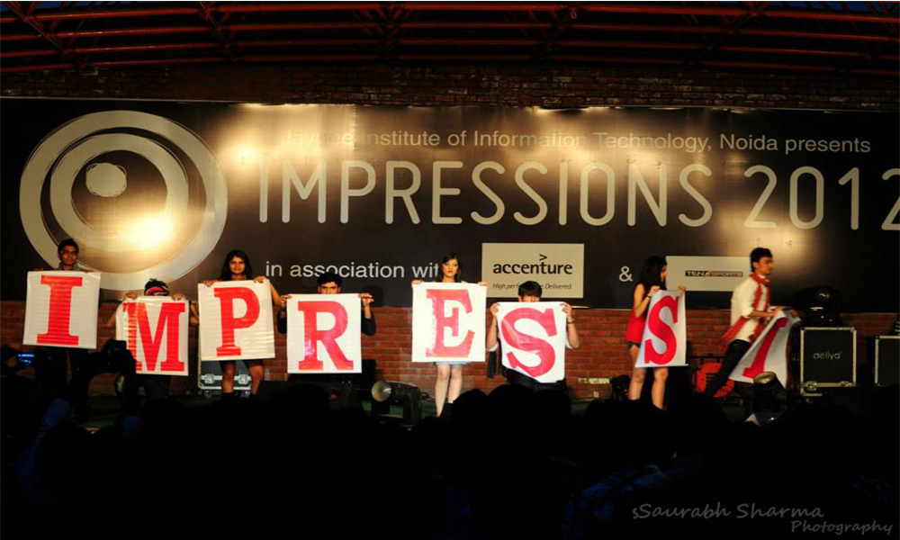
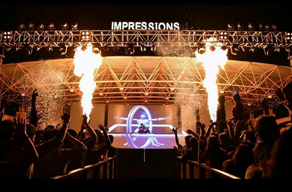
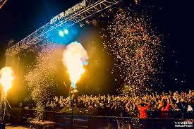

IMPRESSIONS

IMPRESSIONS the annual techno-cultural-managerial festival of JIIT was founded by Jaiprakash Sewa Sansthan under the patronage of Jaiprakash Associates Ltd. It is a pulsating festival with an array of events, allowing the students a chance to exhibit and participate in technical and academic pursuits of programming, robotics, B-plan competitions, panel discussions, talk shows and many more such creative challenges. On the other hand it also provides ample opportunities to the young students of today to experience and live their passion doing theme walks, fashions shows and at the same time express their talent and versatility through choreography and street plays.
The range and variety of events put together for Impressions is so spectacular, that it leaves a deep impact on everyone touched by it. It serves as a medium of self-evaluation for the students and of showing to the world at large what they are capable of. The lessons and experience they get at a platform of such magnitude is priceless. Our logo, embodied as whirling fingerprint patterns, signifies the variety, variability and innovation we strive to offer each year. It also stands for individuality, that is, the power to just be and to stand up for what matters. The concept of not imparting a color scheme to our Logo implies that the event in itself allows each and every one to make an interpretation that serves them well. An individual is free to make his own choices and also free to enjoy this extravaganza in his very own inimitable style.
Impressions, besides providing a platform for enterprising young talent also helps individuals in identifying their unique skill sets and preparing them to face the competitive environment by participating in various events. The festival also allows the students to relax and have fun with their peers and friends after a year of slogging through the college curriculum by being a witness to a celebrity performance which concludes the three day festival.
Impressions, therefore is the time and opportunity when everyone gets together and works towards a common goal of having fun and as a result end up making some beautiful lifelong memories.

GO TO HOME PAGE